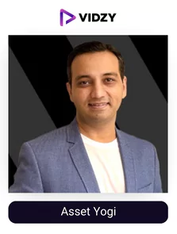
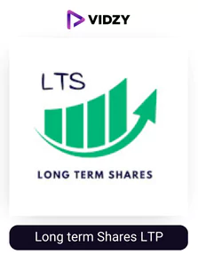

Finance is the foundation block of every business. The right financial strategy is crucial for success. Finance is so intricately weaved inside us that minor fluctuations either negative or positive, in finance related aspects cause great emotion fluctuations.
Finance knowledge and expertise comes very handy when we must undertake any business or individual decision. The knowledge is a bit scarce and current affairs related to finance creates dilemmas and confusions. So, how to overcome these milestones?
Top Finance YouTubers in India are a preferred choice for finance and related aspects information gathering. They help the common netizens as well as brands via simplifying various concepts which leads to timely and sound decisions. However, let’s uncover in depth who they actually are!
Who are Finance YouTubers?
Finance YouTubers are the social media content creators that create valuable content related to finance and fintech topics. They identify the latest changes in the finance markets and curate content regarding it. Many top finance YouTube channels cover topics like Stock Market, Indian economy, SIP, Insurances, Mutual Funds, etc.
The YouTube audience cherishes the top finance Youtube channels for their content as they are educated and get awareness about new upcoming in the finance domain. It directly helps the customers to save money, invest better, better understand financial statements and much more! The tips and tricks turn out to be highly effective for their digital community. Now, let’s explore their types!
Types of Finance YouTube Channels in India
- Personal Finance YouTubers: personal finance helps an individual to stay buoyant amidst this inflationary market scenario. The finance YouTubers in India also suggest various terms and policies which can directly benefit monetary health.
- Budgeting Finance YouTubers: Budget touches every aspect of financial soundness. Based on budget constraints, an economic decision can be taken. The content also focuses on the Budget of nations, stages, policies, etc.
- Loan and Credits: Loan and credit directly help many involved entities in realising their objective. It can vary from student loan, home loan, vehicle loan, etc. They suggest the best loans available in the market.
- Retirement Plans Finance YouTubers: The finance Youtubers acknowledge the working professionals in taking sound decisions to cover their retirement. The prudent thinking helps in keeping the individual stress free.
The Finance YouTubers in India hold many capabilities in educating wider audiences. The video content format that they present is the guiding bandwagon for the whole purpose. The video content is the most affirming method to relay information.
However, you can take it one step forward by collaborating with our company i.e. Vidzy, which is the leading video production company in India. It is a revolution in the world of video content creation as it lets you have video content featuring finance niche influencers promoting your finance product which you can then use for your social media posts, ads, or reviews. Their IIT/IIM alumni experts have more than 6+ years of experience in this and can churn out the best quality of campaigns which is difficult to achieve in-house. Moreover, we provide you with the content within 48 hours of you giving the order. So, hire us for your finance-related videos such as product explainer, video Ads, organic social media videos etc. today!
Let us see who are the top finance YouTubers in India which you can leverage with the help of us.
List of Top 20 Finance YouTubers in India That You Should Follow in 2024
Contents
- 1. Pranjal Kamra
- 2. CA Rachana Phadke Ranade
- 3. Praveen Dilliwala
- 4. Asset Yogi
- 5. Ankur Warikoo
- 6. Groww
- 7. Money Purse
- 8. Mukul Agrawal
- 9. Honestly by Tanmay Bhat
- 10. Basic Gyaan
-
1. Pranjal Kamra
YouTube Channel: pranjal kamra
USP:
One of the top financial advisors on YouTube, Pranjal, was highlighted on the covers of business Today magazine.
Pranjal Kamra is a well-liked YouTuber and financial expert. In order to provide value-added finance, investment, and stock market education, he founded finology Ventures Private Limited. Pranjal has a law degree from Hidayatullah National Law University as well as a certification in investment and security from the National Institute of Securities Markets (NISM). The best-selling book Investonomy: The Stock Market Guide That Makes You Rich was written by Pranjal.
On May 13, 2011, Pranjal Kamra launched his YouTube channel. More than 451 of his videos have been uploaded, covering subjects like stock market basics, investing, mutual funds, stock markets, initial public offerings (IPOs), entrepreneurship, insurance planning, financial planning, future, and options, etc. The YouTuber uses entertaining techniques to impart knowledge, such as creating a series called "Business games."
Due to his ability to deliver value through his content, Pranjal has a sizable 5.27M YouTube following. Pranjal is among the top financial YouTubers in the nation with an engagement rate of 0.19%. In the last 30 days, he added 7 videos and 22.4M used to his channel. With 10.7 million views, 654 thousand likes, and 11.8 thousand comments, Pranjal's most popular video is titled "Stock Market For Beginners | How can Beginners Start Investing in Share Market | Hindi." He makes use of these crisp thumbnails, adds captions, an end screen, an info card, and comments with hearts.
-
2. CA Rachana Phadke Ranade
YouTube Channel: CA Rachana Phadke Ranade
USP:
For newcomers who want to develop financial discipline and become familiar with stock markets and financial concepts, Rachana Phadke Ranade is a go-to YouTuber. With more than ten years of experience, Rachna is well-equipped. More than 5,000 students have benefited financially from her assistance.
Rachna has a bachelor's in business administration, a postgraduate diploma in management, and a master's degree in business studies. She is a chartered accountant. Rachna runs two channels, CA Rachna Phadke Ranade for English and CA Rachna Ranade for Marathi, to promote financial literacy in both languages.
4.43 million people have subscribed to Rachna Ranade on YouTube. One of the top finance YouTubers in India makes videos on a variety of subjects, including the stock market, finance, audit, chartered accounting, mutual funds, technical analysis, fundamental analysis, forensic audit, budget, cryptocurrency, metaverse, investment, personal finance, and initial public offerings (IPOs). Rachana has 3.8 million YouTube subscribers, putting her engagement at 0.07%. Among the top Indian financial YouTubers, Rachna is reliable with her updates. 22 of her 799 videos were uploaded in the last 30 days total.
The chartered accountant's channel has received 396M views overall. The most popular video on the channel, "Basics of Stock Market For Beginners Lecture 1 By CA Rachana Phadke Ranade," has 21.8M views, 555K likes, and 29K comments. Over 93% of marketers are focused on influencer marketing as it gives the best ROI as per socialpubli, if you as a business are looking for it as well, she is the ideal influencer to collaborate with
-
3. Praveen Dilliwala
YouTube Channel: Praveen Dilliwala
USP:
The financial YouTuber to watch is Praveen Dilliwala if you want to learn monetizable skills and broaden your knowledge of finances.
Praveen Dilliwala is a content producer and one of the top finance YouTubers who works to educate young people in India about finance, market entrepreneurship, and economics. The financial YouTuber offers his viewers unbiased and truthful insights. India's future population will be more financially literate and capable of making informed decisions under his direction.
3.59 million people follow Praveen on YouTube. His content on financial certifications, investment banking, education, fascinating facts, jobs and careers, high-paying skills, cryptocurrency, side hustles, self-improvement, and online earning is well-known. The online actions of the digital creator are consistent. On May 29, 2017, Praveen started his channel, and as of today, he has 1.43K videos uploaded. In the channel's entire history, the videos have received 249M views, of which 2.99M came in the last 30 days.
The YouTuber receives 41.4K monthly views on average. Biggest Job Scam on YouTube | Earn 1600/Day Free? | Work From Home Job | Earn Money Online is Praveen's video, and it has over 7 million views, 10.3 thousand comments, and 126 thousand likes. In his videos, the digital creator follows best practices recommended by YouTube, such as using high-resolution thumbnails, pinned comments, hearted comments, info cards, end screens, etc.
-

4. Asset Yogi
YouTube Channel: Asset Yogi
USP:
We must first lose in order to gain in the volatile world of finance. Fortunately, asset Yogi can teach you how to make money while being conscious of the risks. To access the best information and tools for success, subscribe to the channel.
Asset Yogi is made up of a team of finance professionals who offer a comprehensive guide to everything regarding financial investments and business. Additionally, there is an app called Asset Yogi that promotes financial literacy in a universally understood language.
Finance, real estate, personal finance, loans, insurance, tax startups, mutual funds, stock market value investing, savings, asset management, entrepreneurship, taxes, yield, IPOs, growth, investments, business, and money-making assets are all topics covered on the Asset Yogi channel. 3.65 million subscribers and a 0.26% engagement rate are on Asset Yogi. 225M people have watched the channel's 627 videos. In the past 30 days, 5 videos have added 4.2M views to the total.
The average number of views for one of the finest finance YouTubers is 95,000. (calculated from the recent 30 videos). The video "Zerodha Kite Trading Tutorial with Buy, Sell Process | Zerodha App Use?| Intraday, GTT" by Aise Yogi has 6.48 million views, 184 thousand likes, and 5.99 million comments. The channel maintains best practises for YouTube, including high-religion thumbnails, info cards, chapters, and captions. It also has a strong SEO rating.
-
5. Ankur Warikoo
YouTube Channel: warikoo
USP:
Ankur Warikoo started his channel to discuss business, personal growth, and finance. He coached numerous start-ups in India. The lists "India's Top Executives under 40 list," "LinkedIn India's Powerptofiles list," "LinkedIn India's spotlight list," and "Fortune magazine's 40 under 40 list" all include Ankur.
Ankur Warikoo has more than four years of experience creating content and is one of India's top entrepreneurs, angel investors, authors, public speakers and one of the best finance YouTubers in India. Ankur started his business career in 2008. He started Groupon and served as its CEO for a long time. Up until 2019, he also served as CEO of Nearbuy. Ankur acquired critical business development, fundraising, and investing skills throughout his entrepreneurial journey. Later, he began dabbling in consumer behavior, which enabled him to learn more about how people think, why they act the way they do, and what drives them. Throughout India, Ankur speaks extensively about his experience on various public speaking occasions. Do Epic Shit, a book written by India's top mentor rose to the top of Amazon's bestseller list.
"Warikoo" was created by Ankur on August 1st, 2017. The channel currently has 2.92 million subscribers and 935+ videos covering a variety of topics including motivation, entrepreneurship, inspiration, public speaking, growth mindset, finance, cryptocurrency, book recommendations, personal finance, investing, stock market, assets, passive incomes, metaverse, money traps, markets, and much more. The YouTuber has a 0.50 percent engagement rate. All of the uploaded content has received 238M views on the channel. Ankur enjoys writing in-depth, lengthy articles. His videos typically last 21 minutes and 33 seconds and receive 137.1K views. Ankur describes how he used credit cards to make money in one of his videos. On Facebook, the post has 3.01M views, 46.9K likes, 4.15K comments, and 10.0K shares. Make sure you follow one of the best finance YouTubers in India.
-
6. Groww
YouTube Channel: Groww
USP:
A platform for investing that ensures you make informed choices by explaining various concepts.
New apps have been released and the number of digital investing platforms has significantly increased in India. As the world tries to adjust to the recent changes brought on by the current pandemic crisis, people are looking for various ways to increase their wealth.
In India, a simple and user-friendly investing platform called The Groww App was launched in 2016. It is one of the best-rated apps in the Play Store and App Store, with scores of over 4.4 and 4.5 stars, respectively. The company offers safe, secure, and highly encrypted stock, mutual fund, SIP, and now IPO investments through the Groww app and online platform.
They have a following of more than 1.97 million people thanks to the content they provide on their YouTube channel. Make sure you follow them!
-
7. Money Purse
YouTube Channel: MoneyPurse
USP:
With their masterfully crafted videos, they will educate you about money.
Financial literacy is important because it will give you the knowledge and skills you need to manage your money well. Your actions and choices regarding savings and investments would lack a solid foundation if you didn't have the same. However, financial literacy will help you manage your money more wisely by strengthening your understanding of basic financial concepts. It will also help you reach financial stability, manage your money well, and make wise financial decisions.
One such YouTube channel that will make you smarter by giving you a thorough understanding of all the financial concepts is Money Purse. Over 1.43 million people are subscribers, and their engagement rate is rising. Over 2.8 million people have watched their most popular YouTube video, which discusses the ABCD of the stock market. Make sure to subscribe to one of the top finance YouTubers in India.
-
8. Mukul Agrawal
YouTube Channel: MukulAgrawal
USP:
Mukul has unmatched expertise in the markets, futures, MCX (Multi Commodity Exchange of India), currency, intraday trading, swing trading, short- and long-term positional trading, BTST (buy today, sell tomorrow), and STBT (sell today, buy tomorrow). One of India's top mentorship programs was developed by him.
Mukul Agrawal is an Indian investor, entrepreneur, TEDx speaker, financial freedom coach, technical analyst, and motivational speaker. He is the foremost expert on stock market education at all levels. Mukul offers 24/7 mentorship, study materials, and multi-conformation-based studies on stock selection, technical analysis, and advanced prediction.
Mukul has amassed 206.3M views after posting 4100+ videos to his channel. In the past 30 days, he added 87 new videos, garnering a total of 4.53M views. He discusses various stock types, long-term investments, initial public offerings (IPOs), the NSE, BSE, and the Nifty Sensex, news, stock market advice, mutual funds, technical analysis, Nifty predictions, and cryptocurrencies, among other topics. The finance YouTuber has a 0.23% engagement rate. Mukul subscribers can expect new videos. Every day at 8:30 p.m., the YouTuber hosts live sessions as well. Mukul also maintains an active blog and regularly posts on Facebook, Twitter, Instagram, and Telegram. Make sure you follow one of the top finance YouTube channels.
-
9. Honestly by Tanmay Bhat
YouTube Channel: Honestly by Tanmay Bhat
USP:
Tanmay Bhat can make you laugh while imparting some useful financial knowledge that will benefit you in life.
For his comedic skits, Tanmay Bhat enjoys enormous popularity among Indian audiences. He established "All India Bakchod" and hosted a number of television comedy competitions. The well-known YouTuber is also well-known for producing podcasts, live streams, and videos on finance, the stock market, money mistakes, full-time trading, candlestick chart analysis, chart patterns, trading indicators, live trading, Demat accounts, and cryptocurrencies in addition to his comedic performances. Additionally, Tanmay explains to his audience where he purchases his stocks, how he conducts his research, and how he handles his trading accounts.
Tanmay Bhat already has a 4.14M subscriber YouTube channel with 488 videos under his name. On February 18, 2020, he launched his second channel, "Honestly by Tanmay Bhat," which would cover topics other than comedy. Tanmay invites well-known cricket players, financial experts, crypto billionaires, singers, comedians, actors, and more to discuss important ideas that have an impact on a person's life in his videos. The engagement rate for the channel is 4.17%. Tanmay added 2.61M views over the course of the last 30 days by posting twice making it one of the finance YouTube channels. Tanmay Bhat discusses money secrets in his most popular video There are 5600 comments, 183K likes, and 2.3 million views on the post.
-
10. Basic Gyaan
YouTube Channel: Basic Gyaan
USP:
They will assist you in gaining a fundamental understanding of the key financial concepts.
More and more people today are worried about their general knowledge. Information is highly valued in contemporary society because it is essential for many everyday skills, including intelligence, problem-solving, communication, and open-mindedness. Our personalities are frequently judged socially based on our level of education. It is challenging to be self-assured, communicate unambiguous thoughts, and make a good impression when there is a lack of common knowledge.
A tool for keeping up with a world that is constantly changing, lifelong learning is more than just a passing trend. You can benefit from expanding your general knowledge in every area of your life. Your relationships, social abilities, well-being, and career all improve as a result. Additionally, it enhances your social skills and self-confidence.
The goal of Basicgyaan is to educate you on all the fundamentals of sound financial management which they are successful in doing making them one of the best stock market YouTube channels in India. Because of this, they have 881k subscribers and an increasing engagement rate. Make sure to subscribe to Indian YouTubers who discuss finance.
-
11. AryaaMoney
YouTube Channel: AryaaMoney
USP:
Through their educational videos, they will assist you in making significant gains in the stock market.
Training, consulting, and trading in the stock, commodity and forex markets are all services provided by the investment counselling and training institute Aryaa Money PVT LTD.
Investing in stocks is one of the best ways to make significant profits. If done incorrectly, it might also be the quickest way to lose money. Profitable stock market returns are frequently the result of years of experience, meticulous planning, and in-depth research into the characteristics of the stock market. Despite how appealing and easy share trading may seem to a novice investor, it is suggested that in order to actually make any money, one needs a certain level of technical knowledge and expertise. And Aryaamoney's team of experts can assist you with that. They have numerous, really simple-to-follow stock market videos. Make sure to subscribe to one of India's top finance YouTubers.
-
12. Kritika Yadav
YouTube Channel: KritikaYadav
USP:
She will help you make more informed decisions financially.
Kritika has emerged as one of the best female finance YouTubers India who has experienced significant growth over the past few months. Her videos make an effort to analyse and highlight advancements in the finance sector, stock market, and mutual funds. In addition to the general financial education of the general public, this stock market influencer tries to cover the fundamentals of saving, debt investing, and money management.
In her videos, she makes an effort to be as thorough and detailed as she can.
This is the reason she has a fantastic following of 656K along with a great engagement rate. Her most famous video has 2.4 million views, about the top 3 best shares. Make sure you follow her!
-
13. Market Gurukul
YouTube Channel: MarketGurukul
USP:
As the name suggests, it is a school for you to learn about finance for free.
The channel features original videos that cover everything from technical analysis to more complex variations like trading diversions. We also have videos on hard-core technical analysis and tutorials on trading psychology and money management. On this YouTube channel, you can also find videos about options and futures. The most recent news and details about stock market investing are available here.
They give you tools, strategies, and indicators to better understand the markets as well as the A-Z of technical analysis and fundamental analysis training. by giving you a mobile app to track, research, evaluate, and trade on the go By giving you free, frank reviews of trading-related products, they have been able to generate over 501k subscribers. Make sure you follow one of the best stock market YouTube channels in India!
-
14. Fund Guruji
YouTube Channel: FundGuruji
USP:
You can learn everything about the stock market from this channel.
Indians are known for their sophisticated financial reasoning, but when it comes to understanding investing and financial diversification, there is a severe lack of information and investment appetite. Due to insufficient attention given to teaching students about these potentially important life subjects in schools and colleges, young professionals find it difficult to file their taxes, understand the equity markets, or engage in trading and investing.
We millennials have been told our entire lives that investing in stocks is the riskiest and will lead to financial loss. Less than 10% of Indian families invest in alternative assets, the majority of which choose to keep their money in bank accounts, such as mutual funds or stocks. Fund Guruji - one of the best stock market YouTube channels in India has a tonne of videos to help you comprehend the market and help you generate enormous profits in an effort to change this and educate you about the stock market. Make sure to subscribe to India's top finance YouTubers.
-
15. Bazar Ke Pandit
YouTube Channel: BAZAR KE PANDIT
USP:
As his name implies, he will allay all of your financial questions and improve your financial acumen.
While keeping money in a bank account is perfectly acceptable, there is a chance that inflation will eventually cause the value to decrease. This underlines the importance of early instruction in stock trading and investing, teaching kids about concepts like compounding, the stock market, portfolio diversification, and many other things that could help them become more financially literate as adults.
So why are parents and educational institutions responsible for teaching their young children about trading and investing? Since they are young, active, and have time on their side, college students have an advantage over traditional adults who start investing in their 30s. While that is not the case, you can use channels like these as your starting point for your journey and to make a lot of money. Make sure to subscribe to one of the top finance YouTubers in India!
-
16. Lakshya
YouTube Channel: SUPER TRADER LAKSHYA
USP:
He will make you a pro in the stock market.
This Indian stock market influencer leads the way for a more educated audience in the stock market and trading niche and has a sizable YouTube following. His articles primarily cover stock market forecasts, Nifty analysis, daily updates, and brand-specific discussions of IPOs, fundings, and profit potential.
Therefore, you are aware of the channel to use for all stock market-related information. Because we undoubtedly did when developing the content strategy for Angel Broking, one of the most effective broking applications in India. It appears that the word of mouth of Super Trader Lakshya and numerous other influencers worked in Angel Broking's favour, resulting in unmatched results.
-
17. Rohit Rohra
YouTube Channel: VP FINANCIAL
USP:
Rohit Rohra fills the gap left by a lack of adequate market knowledge by guiding and mentoring aspiring traders. The only channel in India that offers advice on how to read trading charts is VP Financial.
Rohit Rohra is an Indian stock market trader, and trainer and has one of the best financial independence YouTube channels. He began trading at a very young age by teaching himself every trading niche. Rohit was able to develop a practical and successful approach to the stock market thanks to the new insights. The YouTuber has over ten years of industry experience. In order to educate and train his fellow finance enthusiasts, he founded VP Financial. A channel devoted to price action, intraday trading, live trading, swing trading, and trading the Bank Nifty is called VP Financial. To help traders get off to the right start in the current market and a successful career, Rohit works hard.
On August 4, 2015, Rohit Rohra launched his YouTube channel. He has posted 1000+ videos to the platform, and 36.6M people have watched them. The financial YouTuber added 125K views to the total last month after posting three new videos. Among the subjects that Rohit covers are Nifty and banks. Technical analysis, stock ideas, intraday trading, live trading, Nifty analysis, etc. To help his audience learn from his errors, Rohit also includes examples from the past. On YouTube, Digital Creta has an engagement rate of 0.81%. His videos are typically 10 minutes and 59 seconds long and receive 14.8K views on average. How to find breakout stocks is highlighted in the channel's most popular video, which has 356K views, 12.3K likes, and 89 comments.
-

YouTube Channel: LongtermsharesLTS
USP:
They will offer you the top stocks for long-term investing so you can increase your wealth.
One of the main issues with any type of investing is market volatility. Volatility measures the degree of price volatility over time. Another way to think about volatility is through price fluctuations. The magnitude and regularity of a stock's price changes affect how volatile it is. Investments with high volatility carry a significant amount of risk because of their fluctuating prices.
The advantage of long-term investing is demonstrated by the correlation between volatility and time. Investing for the long term frequently has lower volatility than investing for the short term. The longer you invest, the more likely you are to weather market downturns.
Additionally, one of the best financial YouTube channels has a variety of videos that can assist you in selecting the best stocks for long-term investing. Make sure to subscribe to Indian finance YouTubers like these.
-

19. Sanchit
YouTube Channel: MrScalper1998
USP:
He will show you how to trade to increase your wealth exponentially.
The Coronavirus scenario and its economic implications have given rise to a number of high-probability trade possibilities. They don't happen often, but when they do, if you know what you're doing, they could hasten the process of you accumulating wealth.
Through his channel Mrscalper, Sanchit brings you every concept that is simply explained to assist you in using the best strategies and avoiding traps. His dependability and excellence are admired by all. He has over 261K subscribers and a rising engagement rate as a result of this. His most-watched video, in which he recommends the top penny stocks, has received over 831k views. Make sure to adhere to follow one of the most followed finance YouTube channels in India!
-
20. Daice Paul
YouTube Channel: Smart Trader
USP:
He will make you wealthy by imbibing the basic knowledge you need of the stock market.
Daice Paul runs the incredibly helpful channel Smart Trader. He covers all aspects of stock trading, including platform navigation, stock selection, market developments, and live intraday trading streams.
The videos from this stock market influencer cover everything he has discovered about the dos and don'ts, his analyses, and the experience that newcomers to the stock market can learn from. If you have any questions about the subject, he occasionally answers them to assist newcomers. Check out one of the most followed finance YouTube channels in India for the stock market for more information on trading!

Conclusion
How often do we wish that schools would teach us financial management skills? But sadly it is not and for all of us, managing finances is not only an important but also a confusing task Finding one's way through the maze of stock markets, investments, mutual funds, insurance plans, and more recently, cryptocurrencies and NFTs, can be very challenging. The Internet offers a variety of tools to help us navigate this maze in this situation. The finance YouTube channels mentioned above can act as your helpful manual for handling your money wisely.
And for businesses looking for top finance YouTubers to work with through short video content which is highly effective as by end of 2024, it is anticipated that the average person will watch 100 minutes of online videos per day as per zenithmedia, contact Vidzy right away to make this process simple and highly effective!